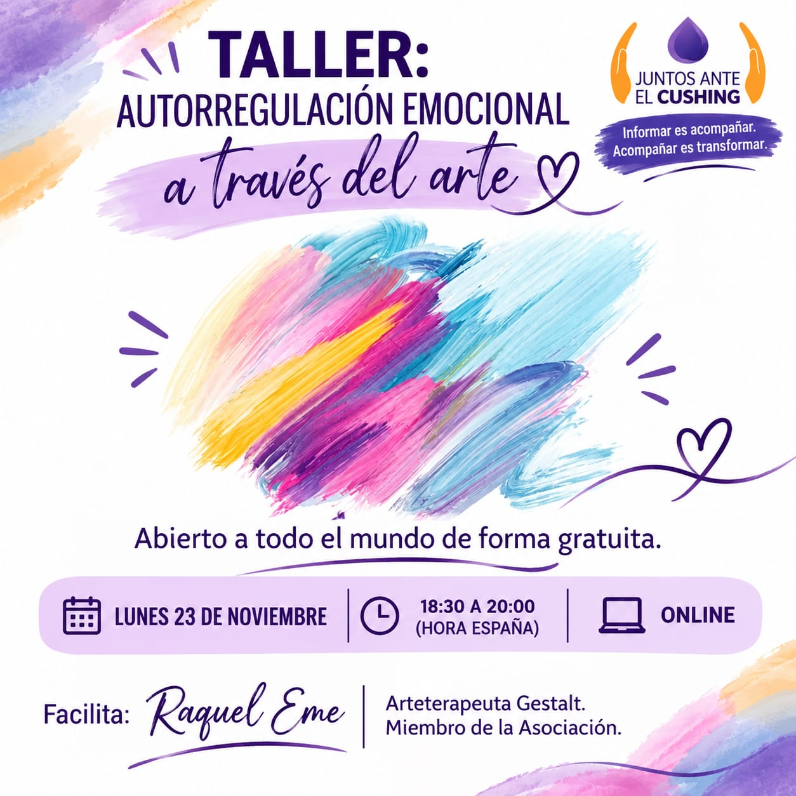

Actividades
Talleres
Espacios online y gratuitos para cuidarnos, aprender recursos y sentirnos acompañados.

‼️ Notición ‼️ · Inscripciones abiertas
Taller: autorregulación emocional a través del arte
Os presentamos el 1.er taller online de la Asociación Juntos ante el Cushing: se realizará el próximo lunes 23 de noviembre de 2026, de 18:30 a 20:00 h (hora española).
Tiene como objetivo dar algunos recursos que ayuden a la persona a una mejor autorregulación emocional. Lo haremos a través de dinámicas sencillas de mindfulness y arte.
Está abierto a todo el mundo y es totalmente gratuito.
⚠️ Ten en cuenta:
- No es una sesión de psicoterapia y no sustituye un seguimiento psicológico.
- No se requiere experiencia previa en arte.
Material necesario:
- Folio o cartulina blanca. Tamaño DIN A4 está bien (folio estándar).
- Colores. Pueden ser lápices, rotuladores, ceras…
- No hay que comprar nada: lo que cada uno tenga en casa sirve.
Enviaremos un correo electrónico el mismo día con el enlace para la sesión.
¡Ya os podéis inscribir rellenando el formulario! ¡¡Os esperamos!! 🥰